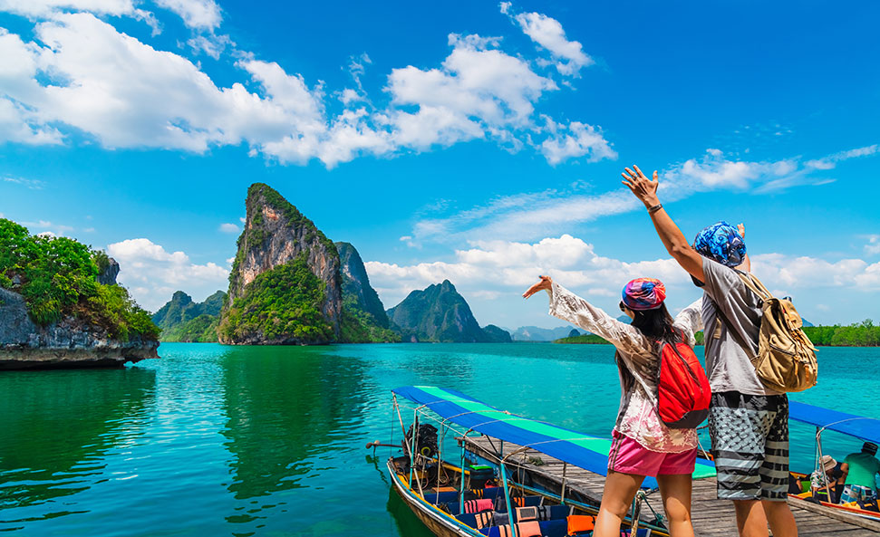
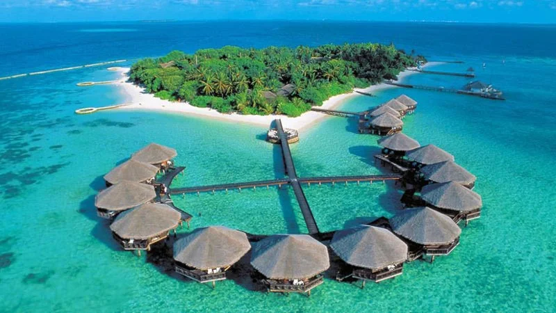

Tourism is a global industry that involves the travel of people to destinations away from their usual environment for leisure, business, or other purposes. It plays a significant role in the economy of many countries by generating revenue, creating jobs, and promoting cultural exchange. Tourism allows people to experience new places, cultures, and landscapes, contributing to personal enrichment and fostering greater understanding between different communities.
There are various forms of tourism, each catering to different interests. Leisure tourism, for instance, is one of the most common types, where people travel to relax, explore, and engage in recreational activities. Popular destinations for leisure tourism include beaches, historical landmarks, national parks, and cities known for their culture, art, and architecture, such as Paris, Rome, or New York City. Nature and adventure tourism is another growing segment, where travelers seek out outdoor experiences like hiking, wildlife safaris, mountain climbing, or eco-tourism that focuses on sustainability and conservation.
Cultural tourism offers an opportunity to explore the heritage, art, traditions, and festivals of different regions. Many travelers visit places with rich histories, such as ancient temples, museums, and UNESCO World Heritage Sites. Destinations like Kyoto in Japan, the Pyramids of Egypt, or the cultural hubs of India and Italy attract tourists who wish to immerse themselves in local traditions, art, and history.


Business tourism involves travel for work-related purposes, such as attending conferences, meetings, or exhibitions. This type of tourism has expanded significantly with globalization, as cities around the world have become hubs for international trade and commerce.
Tourism also has its challenges. It can strain local resources, contribute to environmental degradation, and disrupt local communities. Over-tourism, for example, can damage fragile ecosystems and overwhelm popular tourist spots, leading to loss of natural beauty and authenticity. However, sustainable tourism practices are being promoted to address these concerns, emphasizing eco-friendly travel, responsible consumption, and respect for local cultures.
Ultimately, tourism enriches both the traveler and the host, offering a way to connect with new experiences and perspectives while supporting economic growth.